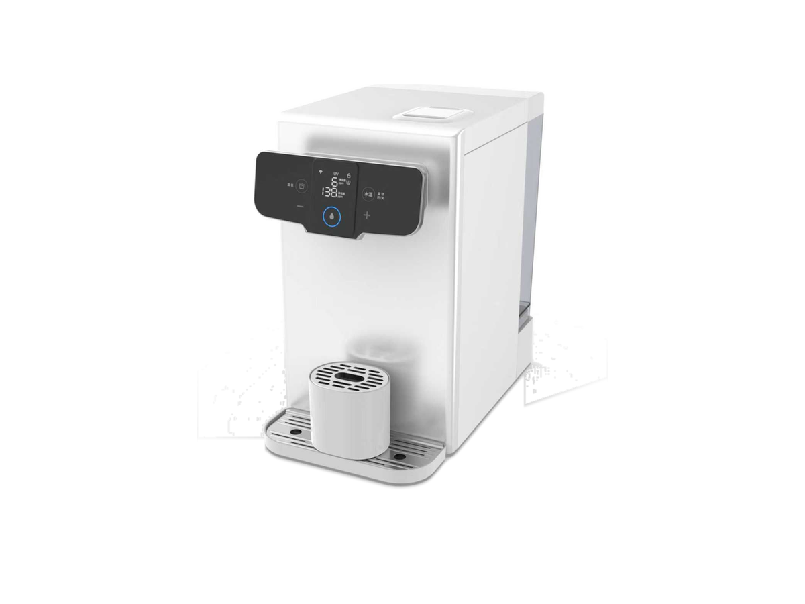
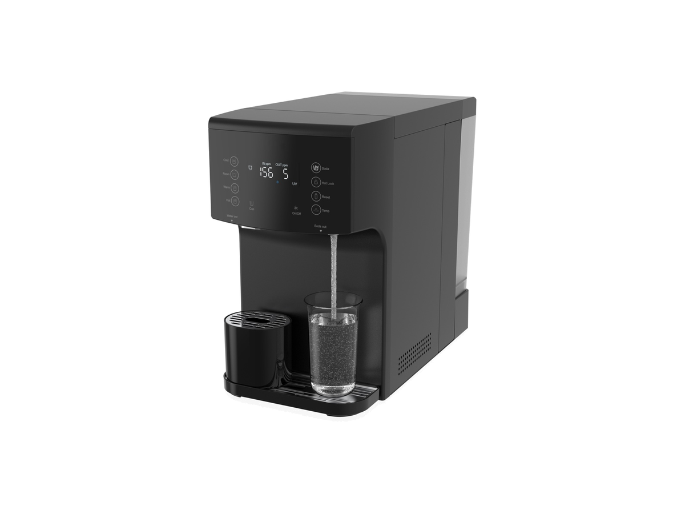
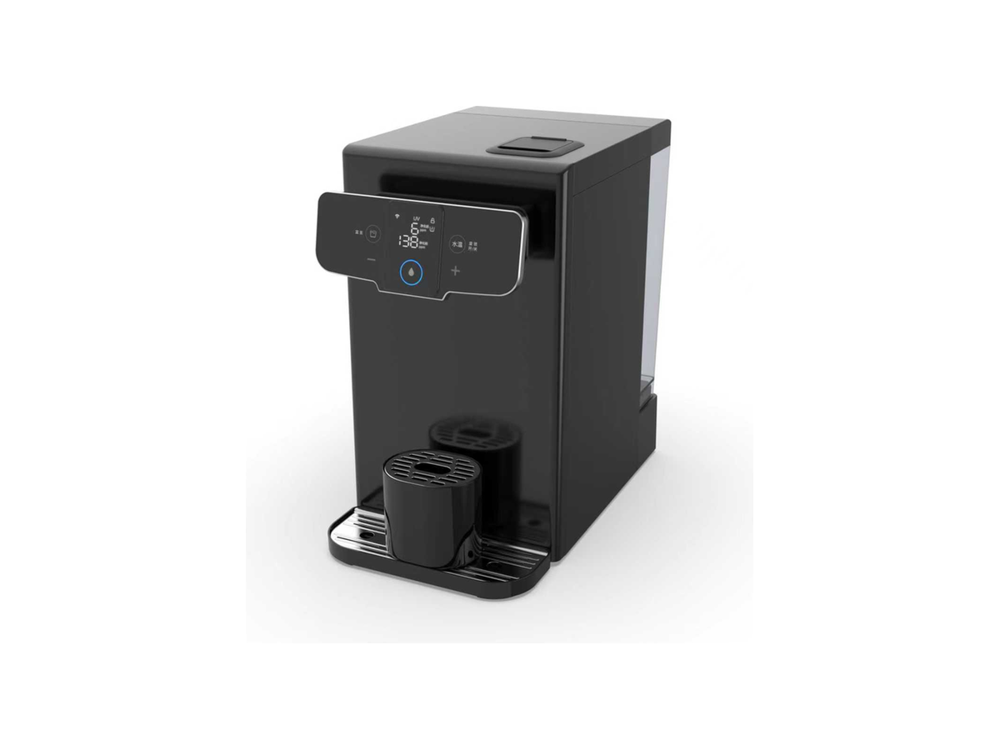

台式净水器
台式净水器RP-C07
带加热壶的 RO 净水器
SKU: RP-C07
起订量：询价时确认

台式净水系统
气泡水与富氢水台式系列 (P90 / P90-1)——两个变体，一页呈现。
RP-C15 是台式 RO 净水器系列，包含两个变体。P90 为气泡水款——一台出气泡水、冰水与热水；P90-1 为富氢水款——富氢水、冰水与热水。两款均为压缩机制冷，采用 RO 过滤与 UV 杀菌，可用水箱或接水管供水。规格按型号及订单确认。
以下规格按变体分别列出——先为 P90 气泡水款，再为 P90-1 富氢水款。所有数值均来自厂家规格表。
本页两个变体——P90 气泡水款与 P90-1 富氢水款。
电压／频率可按目标国家配置，其他配置按订单确认。
将鼠标悬停在款式图片上查看对应参数。触屏设备请点按图片。


P90 产品视频。
P90-1 产品视频。
各型号的完整参数并排对比。下方的规格表为各型号的参数。
| 规格 | RP-C15-1 — 气泡水 (P90) | RP-C15-2 — 富氢水 (P90-1) |
|---|---|---|
| 产品类型 | 台式 RO 气泡水、冰水与热水净水器 | 台式富氢水 RO 净水器 |
| RO 膜 | 100G | 100 GPD |
| 过滤方式 | 不锈钢前置＋复合滤芯＋RO，UV 杀菌 | PP/C＋RO＋UV |
| 水箱 | 原水 4 L／纯水 1.3 L／气泡水 0.2 L | 原水 4 L；废水 1 L（共用仓）；纯水 1.3 L |
| 水源 | 双模式——水箱或接水管 | 按订单确认 |
| 温度档 | 常温、冰水、25 °C、50 °C、80 °C、95 °C | 按订单确认 |
| 加热与制冷 | 按订单确认 | 热水＋冰水（按型号） |
| 热水 | 24 L/h（≥90 °C） | 按订单确认 |
| 冰水 | ≤10 °C，1 L/min | 按订单确认 |
| 气泡水 | 187 mL/min，一键出水（每份 170 mL） | 按订单确认 |
| 氢模块流量 | 按订单确认 | 60 mL/min |
| 溶氢浓度 | 按订单确认 | 1500 ppb（常温富氢水）；1900 ppb（冰富氢水） |
| 出水量 | 250／350／550 mL | 按订单确认 |
| 出水流量 | 按订单确认 | 1 L/min |
| 产水流量 | 按订单确认 | 270 mL/min |
| 额定净水量 | 按订单确认 | 2000 L |
| 纯废水比 | 按订单确认 | 1:1 |
| 滤芯寿命 | 按订单确认 | 复合滤芯约 6 个月；RO 膜 12 个月 |
| UV 灯寿命 | 按订单确认 | 10000 小时 |
| 显示 | TDS（进水与出水）、滤芯寿命提醒 | 按订单确认 |
| 噪音 | 低于 45 dB | 按订单确认 |
| 机身 | 合金（黑／白／深蓝；可定制颜色） | 金属合金（黑／白；可定制颜色） |
| 尺寸 | 420 × 244 × 450 mm | 243 × 463 × 415 mm |
| 净重 | 12.8 kg | 16.8 kg（冰热富氢款）；14.5 kg（冰富氢款） |
| 功率 | 2050 W | 1450 W |
| 电压／频率 | 按目标国家配置 | 按目标国家配置 |
| 起订量 | 按订单确认 | 300 台 |
| 首单交期 | 按订单确认 | 约 45 天 |
厂家规格表中的 P90 气泡水款规格。
| 产品类型 | 台式 RO 气泡水、冰水与热水净水器 |
|---|---|
| RO 膜 | 100G |
| 机身 | 合金（黑／白／深蓝；可定制颜色） |
| 水箱 | 原水 4 L／纯水 1.3 L／气泡水 0.2 L |
| 温度档 | 常温、冰水、25 °C、50 °C、80 °C、95 °C |
| 出水量 | 250／350／550 mL |
| 热水 | 24 L/h（≥90 °C） |
| 冰水 | ≤10 °C，1 L/min |
| 气泡水 | 187 mL/min，一键出水（每份 170 mL） |
| 过滤方式 | 不锈钢前置＋复合滤芯＋RO，UV 杀菌 |
| 水源 | 双模式——水箱或接水管 |
| 显示 | TDS（进水与出水）、滤芯寿命提醒 |
| 噪音 | 低于 45 dB |
| 尺寸 | 420 × 244 × 450 mm |
| 净重 | 12.8 kg |
| 功率 | 2050 W |
| 电压／频率 | 按目标国家配置 |
厂家规格表中的 P90-1 富氢水款规格。
| 产品类型 | 台式富氢水 RO 净水器 |
|---|---|
| 出水流量 | 1 L/min |
| 产水流量 | 270 mL/min |
| 氢模块流量 | 60 mL/min |
| 溶氢浓度 | 1500 ppb（常温富氢水）；1900 ppb（冰富氢水） |
| 过滤方式 | PP/C＋RO＋UV |
| 水箱 | 原水 4 L；废水 1 L（共用仓）；纯水 1.3 L |
| RO 膜 | 100 GPD |
| 额定净水量 | 2000 L |
| 滤芯寿命 | 复合滤芯约 6 个月；RO 膜 12 个月 |
| UV 灯寿命 | 10000 小时 |
| 加热与制冷 | 热水＋冰水（按型号） |
| 纯废水比 | 1:1 |
| 机身 | 金属合金（黑／白；可定制颜色） |
| 尺寸 | 243 × 463 × 415 mm |
| 净重 | 16.8 kg（冰热富氢款）；14.5 kg（冰富氢款） |
| 功率 | 1450 W |
| 电压／频率 | 按目标国家配置 |
| 起订量 | 300 台 |
| 首单交期 | 约 45 天 |
规格来源于 ROPureOEM 目录。尚未确认的数值标注为“按订单确认”，不发布未经确认的参数。